Explicit models for vertical shear and stratification
In the following, we restrict ourselves to flows with vertical shear
and stratification, and assume that mean quantities are horizontally
homogeneous. Under these conditions,
(66) yiels
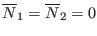 and
The velocity gradient simplifies to
where
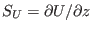 and
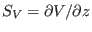
are the vertical shear in 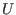 and , respectively.
Under these conditions, and using the conventions
(61) reduces to
Similarly, for the mixing efficiencies, (65) yields
In geophysical applications, a reasonable assumption is
 to elimmate the dependence of (73) on
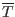. From (160), using
(64) and (68), it follows that
can be
expressed in the form
to elimmate the dependence of (73) on
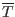. From (160), using
(64) and (68), it follows that
can be
expressed in the form
With the help of (74), the last of (73) can be
re-written as
Note that the new parameter
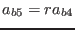 depends on the time
scale ratio, 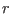, and is, in general, not constant. Nevertheless,
constant 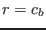 is frequently assumed (see below).
In the general case, (72) and (73) can be
inverted directly to yield a solution of the form
from which, by insertion into (72) and (73),
all other quantities can be determined. Since 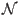 and
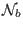 defined in (67) have been treated as known, the solution
is not yet completely explicit. In the numerical scheme of GOTM, they
are updated from their values at past time steps. By identifying
(76) corresponds in form exactly to (45). Note that, adopting the
equilibrium assumption (74), the dependence on  drops in (76). From (46) and (77), and using the definition
of the dissipation rate (155), it is clear that
drops in (76). From (46) and (77), and using the definition
of the dissipation rate (155), it is clear that
The structure of the dimensionless parameter functions apearing in
(76) is given by
where the numerators and the denominator are polynomials of the square
of the shear number,
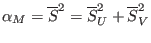, the square of the buoyancy number,
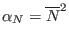, the mixed scalar,
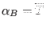, and the
functions and
. The latter two functions depend
on the production-to-dissipation ratios for  and 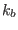, which for
vertical shear and stratification can be written as
and 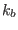, which for
vertical shear and stratification can be written as
Once and (and their dissipation ratios,  and
)
are known, also the time scale ratio defined in (68) can be computed,
and the problem can be solved. Different possibilities to derive
these quantities are discussed in the following.
and
)
are known, also the time scale ratio defined in (68) can be computed,
and the problem can be solved. Different possibilities to derive
these quantities are discussed in the following.
Subsections
Karsten Bolding
2012-12-28